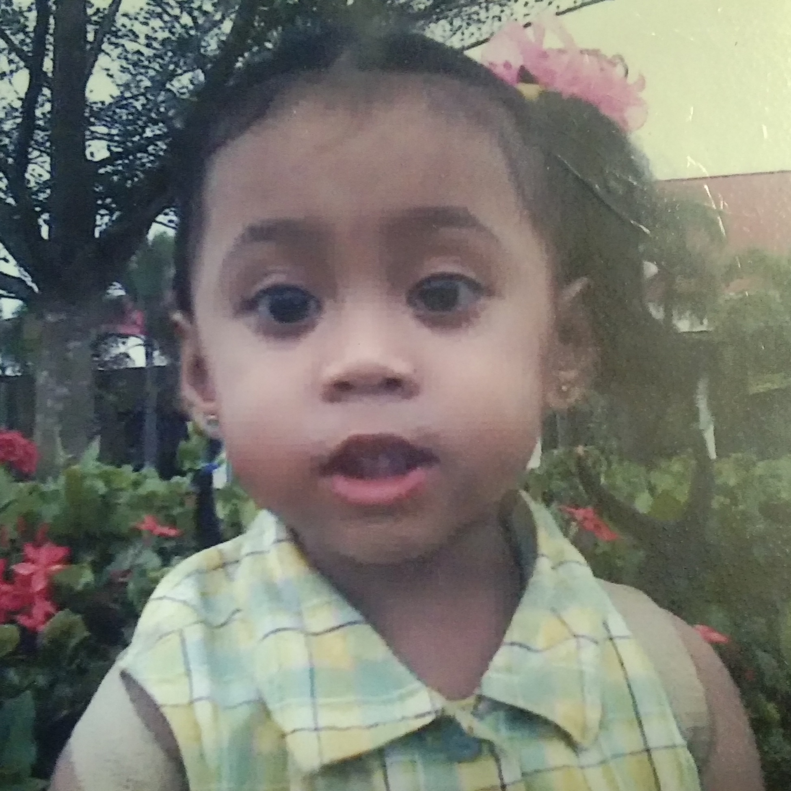

MY CHILDHOOD PICTURES
Here are some of my childhood pictures...
A BLAST FROM THE PAST



Hi there! welcome to my website
This website is a space for connection and sharing experiences...
I'm a work in progress, constantly learning and growing...
About Me
So, who am I? That's a question I've been wrestling with since, well, forever. I'm not one of those people who has a perfectly crafted, concise answer. My life's more of a chaotic, beautiful mess than a neatly organized spreadsheet.
Hi, my name is Alyssa Lacorte Serfino, 18 years old and a first year college student at the University of Southern Mindanao–Main Campus located at Kabacan North Cotabato. I am currently taking the course Bachelor of Science in Information System. I am born on 22nd of August year 2006 here in my hometown, at Poblacion Carmen North Cotabato.
I grew up in Poblacion Carmen, an average town where everyone knew everyone. Those early years shaped me in ways I'm still figuring out – instilled a love for reading and writing. I was a dreamer.
School was… a mixed bag. I excelled at English but struggled mightily with Math. I learned more outside the classroom than in, honestly. I discovered my love for dancing and singing (though does not have a singer's voice but still) during those years, and that's something I still cherish.
Now? I'm navigating the messy yet wonderful world of college life. I chose the course of Information Systems because i am willing to learn and apply it in my career, because we are already living in IT era— where everything is high tech and advanced. I thought of that advancement as an opportunity, for a bigger and better career, knowledge and wisdom. It's challenging, exhilarating, and often completely overwhelming. There are days when I feel like I'm totally nailing it, and days when I just want to curl up with a blanket, a cup of coffee (lots of coffee), and a good music.
I'm passionate about my course, yes it is quite a tough and hard one but i am thriving. I value relationships, friendships, and looking forward in socializing and meeting other new people. I'm still learning, still growing, still making a whole lot of mistakes along the way. And that's okay. Because that's what makes life interesting, right?
So, that's me in a nutshell – or maybe more like a slightly cracked, overflowing teacup. A little messy, a little quirky, and always learning. I aim to provide helpful advice and insights that can empower you.
Here are my favorite hobbies and their ratings...
Watching movies
Reading Novels
Listening to music
Here are some of my childhood pictures...